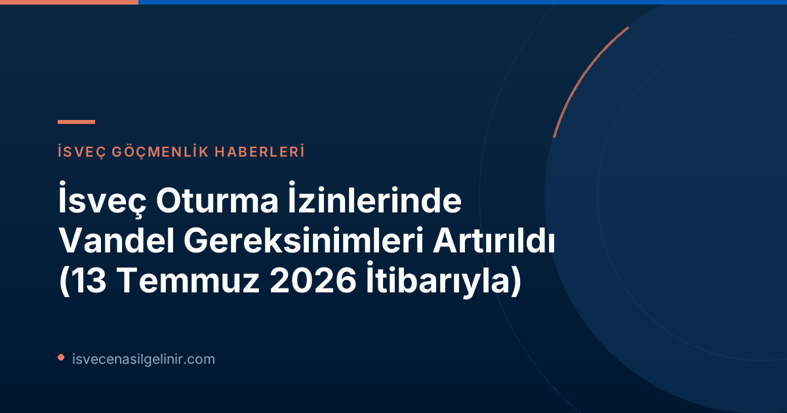

Yeni Düzenlemeler Neden Getirildi? İsveç Göç İdaresi'nin Amacı Ne?
İsveç'in göç politikasında önemli bir adım olarak öne çıkan bu sıkılaştırma, toplumun genel düzenini ve kurallara bağlılığını güçlendirmeyi hedefliyor. Migrationsverket, bu değişikliklerle birlikte, yalnızca suç işleyen kişilere değil, aynı zamanda genel ahlak ve düzen normlarına uymayan kişilere de yaptırım uygulama yetkisi kazanıyor. Kurum, bu adımı "istismarı tespit etmek ve önlemek için bir seferberlik" olarak nitelendiriyor.
Oskar Ekblad, Migrationsverket'in bu konudaki görev gücünün lideri olarak, "Vandeldeki eksiklik, ille de bir suç teşkil etmeyen, ancak yine de toplumun sürdürmeye çalıştığı kuralları çiğnediği düşünülen eylemleri ifade eder. Migrationsverket artık eksik vandel nedeniyle oturma izinlerini reddetme ve iptal etme olanağına sahip," açıklamasında bulundu.
Vandel Nedir? İsveç Göç İidaresi'ne Göre Skötsamhet ve Hederlighet Ne Anlama Geliyor?
Vandel Tanımı
İsveç hukuk sisteminde "vandel", bir kişinin toplum içindeki düzenli, dürüst ve kurallara uygun davranışlarını tanımlayan kapsamlı bir kavramdır. Yeni düzenlemelerle birlikte, Migrationsverket, bu tanımı daha geniş bir çerçevede ele alarak, sadece adli sicili değil, aynı zamanda bireyin genel yaşam tarzı ve toplumsal kurallara uyumunu da değerlendirmeye alacaktır.
"Skötsamhet" (Düzenlilik) ve "Hederlighet" (Dürüstlük) kavramları, vandel değerlendirmesinin temelini oluşturur. Bu, bireyin yasalara, kurallara ve toplumsal normlara ne derece uyduğunu gösterir.
Örnek Olaylar ve Kötü Davranış Kriterleri
Peki, Migrationsverket bir kişinin "vandelde eksiklik" gösterdiğini nasıl belirleyecek? Duyuruya göre, bu durum sadece resmi suç kayıtlarıyla sınırlı değil. Aşağıdaki tablo, vandelde eksiklik olarak değerlendirilebilecek davranışlara örnekleri sunmaktadır:
| Davranış Türü | Açıklama |
|---|---|
| Kurallara Tekrarlı Uyumsuzluk | Zaman içinde birden fazla kez kuralları ihlal etme. |
| Yanlış Bilgi Verme | Resmi makamlara kasıtlı olarak yanlış veya yanıltıcı bilgi sunma. |
| Dürüst Olmayan Geçim Kaynağı | Yasa dışı veya etik olmayan yollarla geçimini sağlama. Bu sadece suçları değil, şaibeli faaliyetleri de kapsar. |
| Suç Örgütleriyle İlişki | Kriminal ağlarla bağlantı veya ilişki içinde olma. |
Önemli bir not: Tekil, daha az ciddi nitelikteki suistimaller genellikle oturma izninin reddedilmesi için tek başına bir neden teşkil etmeyebilir. Ancak, tekrarlayan davranışlar değerlendirme üzerinde ciddi bir etki yaratabilir. Bir karar alırken, Migrationsverket vaka bazında bireysel bir inceleme yapar.
İsveç Göç İdaresi Vandel Değerlendirmesini Nasıl Yapıyor?
Migrationsverket, bir oturma izni başvurusu aldığında, başvuranın genel düzenlilik ve kurallara uyumu hakkında kapsamlı bir değerlendirme yapar. Bu değerlendirme sırasında çeşitli kaynaklardan bilgi toplanabilir:
- Diğer Devlet Kurumlarından Bilgi Toplama: Migrationsverket, ödeme emirleri (betalningsförelägganden) gibi finansal yükümlülükler ve sosyal yardım, sosyal sigortalar ve ödenekler için kişinin sunduğu bilgiler hakkında diğer kamu kurumlarından (örneğin Kronofogden, Försäkringskassan) bilgi alabilir.
- Bütüncül Yaklaşım: Değerlendirme, yalnızca bireyin geçmişteki eylemlerini değil, aynı zamanda toplumsal kurallara uyum konusundaki genel tutumunu da kapsayan bütüncül bir yaklaşımla yapılır.
Tekil Olaylar ve Tekrarlayan Davranışlar
Daha önce de belirtildiği gibi, münferit ve ciddi olmayan bir kural ihlali genellikle başlı başına bir red nedeni değildir. Ancak, belirli bir süre içinde tekrarlayan ve kalıcı bir düzensizlik veya dürüstlük eksikliğini gösteren davranış kalıpları, başvurunun olumsuz sonuçlanmasında önemli bir faktör olabilir. Bu noktada, Migrationsverket vaka bazında bireysel bir inceleme yapar.
Hukuki Prensipler ve Bireysel Değerlendirme
Vandel değerlendirmesindeki her karar, idari hukuk ilkelerine uygun olarak alınmalıdır. Bu ilkeler şunları içerir:
- Yasallık (Legalitet): Kararın yasalara uygun olması.
- Gerçekçilik (Saklighet): Kararın objektif verilere dayanması.
- Tarafsızlık (Objektivitet): Kararın önyargısız ve tarafsız olması.
Migrationsverket, vandelde eksikliği değerlendirirken, bireyin oturma izni alma nedenleri ile düzenli vatandaşlara sahip olma yönündeki toplumsal çıkarı orantılı bir şekilde dengelemek zorundadır. Bu, her başvuranın durumunun spesifik koşullarına göre bireysel olarak değerlendirileceği anlamına gelir.
Kimler Yeni Kurallardan Etkileniyor? İstisnalar Nelerdir?
Skærpaştirilmiş vandel gereksinimleri, İsveç'teki tüm oturma izni başvurularını aynı şekilde etkilemiyor. Bazı önemli istisnalar bulunmaktadır:
| Durum | Vandel Gereksinimlerinden Etkilenir mi? | Açıklama |
|---|---|---|
| AB Hukukuna Dayalı Olmayan Oturma İzinleri | Evet, genellikle etkilenir. | AB hukukuna dayanmayan (örneğin, belirli ulusal vize türleri) çoğu oturma izni bu yeni ve sıkılaştırılmış vandel kontrolüne tabidir. |
| Uluslararası Koruma (Sığınma) Başvuruları | Hayır, etkilenmez. | Uluslararası koruma arayan kişilerin (sığınmacılar) oturma izni başvuruları, uluslararası hukuk ve direktifler gereği bu sıkılaştırılmış vandel kurallarından muaf tutulmuştur. |
| AB Hukukuna Dayalı Oturma İzinleri (Çalışma, Öğrenim, Aile Birleşimi) | Hayır, etkilenmez. | AB hukukuna dayalı olarak verilen oturma izinleri (AB vatandaşları ve AB vatandaşlarının aile fertleri için çalışma, öğrenim veya aile birleşimi gibi) bu yeni kuralların kapsamı dışındadır. Bu direktifler, bireysel durumların koşullarına bağlı olarak oturma izni için bir temel oluşturabilir. sverigemedborgarskapsprov.com adresinde İsveç Vatandaşlık konulu diğer rehberlere ve bilgilere ulaşabilirsiniz. |
Bu ayrım, İsveç'in ulusal göç yasaları ile AB ve uluslararası hukuk arasındaki dengeyi yansıtmaktadır.
İsveç Oturma İzni Başvurunuz Risksiz Olsun: Neler Yapmalısınız?
Yeni vandel gereksinimleri göz önüne alındığında, İsveç'te oturma izni almak isteyenlerin veya mevcut iznini korumak isteyenlerin dikkat etmesi gereken önemli noktalar bulunmaktadır:
- Toplumsal Kurallara Uyun: Sadece yasalara değil, toplumun genel düzenini sağlayan yazılı olmayan kurallara da özen gösterin.
- Dürüst ve Şeffaf Olun: Migrationsverket'e ve diğer resmi kurumlara her zaman doğru ve eksiksiz bilgi verin. Yanlış veya yanıltıcı bilgi sunmaktan kaçının.
- Finansal Yükümlülüklerinizi Yerine Getirin: Vergi borçları, ödeme emirleri gibi finansal yükümlülüklerinizi düzenli olarak ödeyin ve herhangi bir yasal tefecilik veya benzeri faaliyette bulunmayın.
- Suç Örgütlerinden Uzak Durun: Herhangi bir kriminal ağ veya yasa dışı faaliyetle bağlantı kurmaktan kesinlikle kaçının.
- Sosyal Yardımları Doğru Beyan Edin: Eğer sosyal yardım veya benzeri ödeneklerden faydalanıyorsanız, bu konudaki beyanlarınızın doğru ve güncel olduğundan emin olun.
Bu yeni düzenlemeler, İsveç'e entegrasyon sürecinde bireylerin sadece ekonomik ve sosyal katkılarını değil, aynı zamanda etik ve yasal uyumlarını da ön planda tuttuğunu göstermektedir. İsveç'te sürdürülebilir bir yaşam kurmak için bu gereksinimlere uyum sağlamak büyük önem taşımaktadır.
Referanslar
İsveç Oturma İzni Başvurunuzu Güvenle Yapın!
İsveç'in gelişen göçmenlik yasaları hakkında güncel ve doğru bilgilere sahip olmak, başvurunuzu sorunsuz bir şekilde tamamlamanın anahtarıdır. Uzman danışmanlık hizmetlerimizle sürecinizi kolaylaştırın.